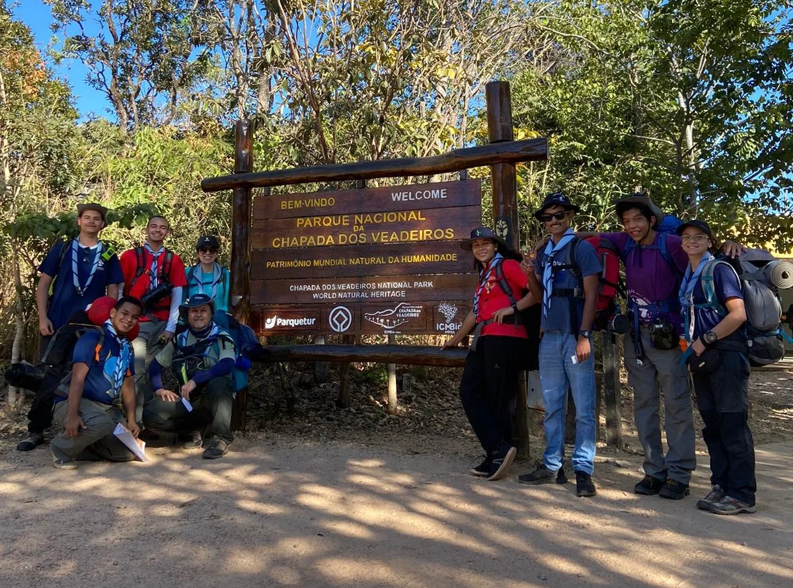
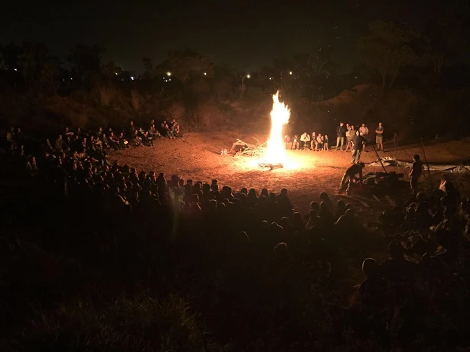
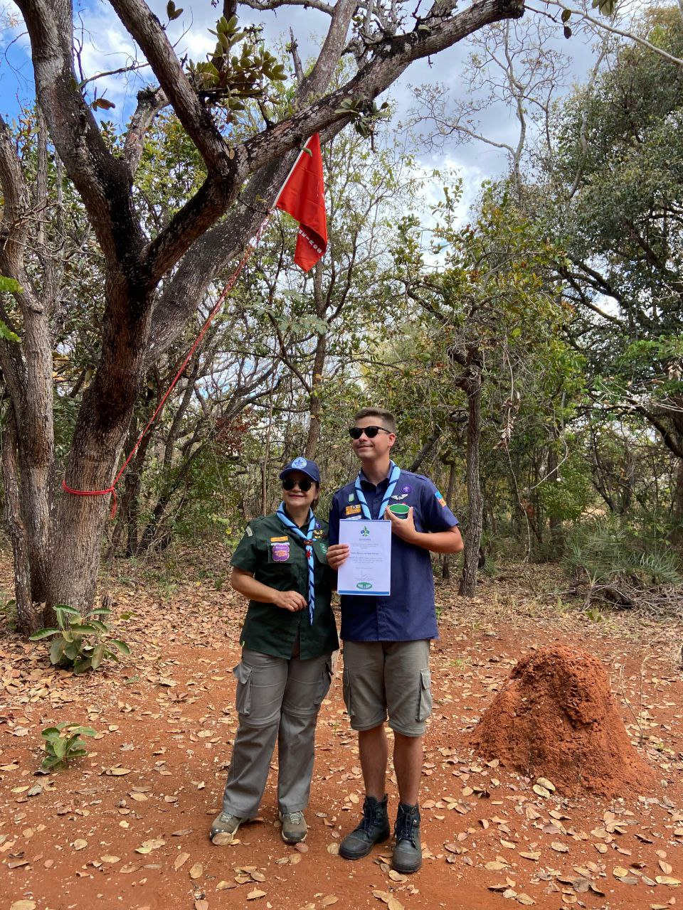

Quem pode participar
Temos ramos para crianças, adolescentes e jovens adultos, com atividades adaptadas para cada faixa etária.
No GEAR 9º DF, jovens vivem aventuras reais, constroem amizades e forjam caráter para a vida toda.

O Escotismo é um movimento educacional que, por meio de atividades variadas e desafiadoras, incentiva jovens a assumirem seu próprio desenvolvimento.
Com base na Promessa e na Lei Escoteira, cada jovem cresce com caráter, responsabilidade, liderança e espírito de serviço.

Quem chega pela primeira vez precisa de informação prática. Esta área organiza o caminho de entrada no GEAR 9º DF.
Temos ramos para crianças, adolescentes e jovens adultos, com atividades adaptadas para cada faixa etária.
As atividades regulares acontecem aos sábados, das 14h30 às 18h, na sede do grupo em Brasília.
Roupa confortável, garrafinha de água, disposição para participar e vontade de aprender com o grupo.
Veja o passo a passo completo, documentos básicos e orientações para a primeira visita.
Do primeiro passo como Filhote aos projetos do Pioneiro, cada ramo tem uma identidade própria.

Vivência intensa na natureza com autonomia, técnica e trabalho em equipe.


Pioneirias, ações sociais, liderança e muito mais.
Ver tudoEspaço para comunicações rápidas do grupo, sem depender só de redes sociais.
Famílias interessadas podem agendar uma primeira visita para conhecer a sede, a chefia e a seção adequada.
Regimento, autorizações, calendário anual e formulários estão organizados em uma área própria.
A página de equipe ajuda pais e visitantes a identificar a chefia, o apoio e os responsáveis pelas atividades.
Calendário combinado com a agenda regional e a agenda do GEARSF, incluindo atividades do grupo, marcos comemorativos e feriados.
A lista abaixo reúne os eventos regionais e do grupo no mês selecionado. Datas em faixa aparecem do início ao fim do período.
Pais, jovens e visitantes ganham mais confiança quando sabem quem organiza, acompanha e responde pelas atividades.
Criamos uma página própria para apresentar chefia, apoio e contatos de referência do grupo.
Ver equipe do grupo
Reunimos links oficiais da Regional do DF, dos Escoteiros do Brasil e da Loja Escoteira para facilitar a vida de quem pesquisa, participa ou quer apoiar o movimento.
A ideia é simples: quando alguém pensar em onde consultar, comprar, aprender ou se orientar, lembrar que o site do 9º DF tem esse caminho.
Notícias, cursos e agenda oficial da Região Escoteira do DF.
Documentos oficiais, P.O.R. e referências do movimento em nível nacional.
Uniformes, distintivos e materiais para quem precisa se organizar melhor.
Não. O grupo recebe novos integrantes e apresenta gradualmente a rotina, os valores e o funcionamento de cada ramo.
Não. Para a primeira visita, basta usar roupa confortável e adequada para atividade ao ar livre.
Sim. A visita inicial serve justamente para apresentar o grupo, tirar dúvidas e alinhar o processo de entrada.
Na página de documentos, com espaço para regimento interno, ficha de inscrição, autorizações e calendário anual.
Venha conhecer o GEAR 9º DF. Aqui sempre há espaço para mais um escoteiro.